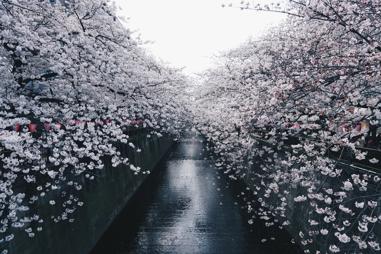
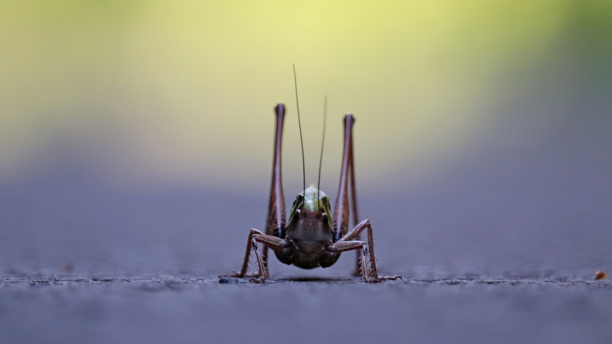
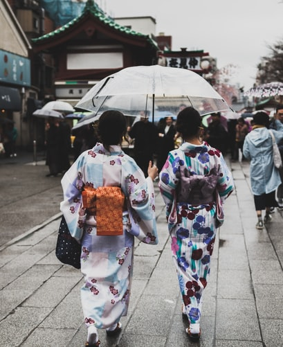

What is Haiku?
A haiku is traditionally a Japanese poem consisting of three short lines that do not rhyme. The origins of haiku poems can be traced back as far as the 9th century.
A haiku is considered to be more than a type of poem; it is a way of looking at the physical world and seeing something deeper, like the very nature of existence. It should leave the reader with a strong feeling or impression.
The most famous haiku authors:
- Matsuo Bashō
- Kobayashi Issa
- Suzuki Hisajo
If you want to know more about Japanese culture, then please click here: Japanese culture
Examples of Haiku
- Matsuo Bashō
- Kobayashi Issa
- Suzuki Hisajo
The birds cry, and the fishes’ eyes are
With tears.

With all his strength
The cricket.

The sky wears
A lined kimono.

Following the dream
Long eyelashes

Start